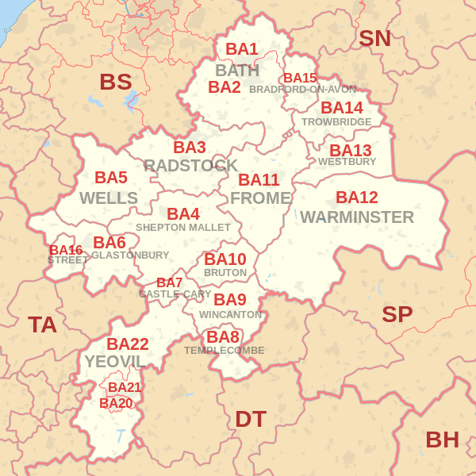
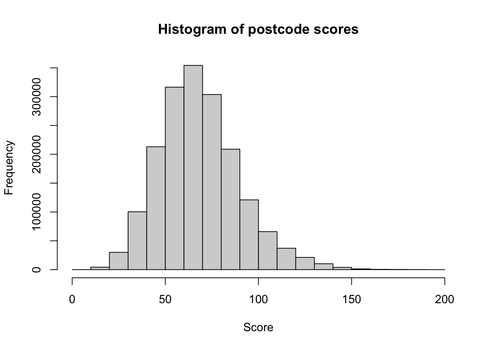
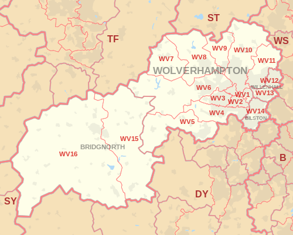

suppressPackageStartupMessages({
library(data.table) # a better data.frame
library(stringr) # simple string handling
library(tictoc) # timing
})
tl;dr
I used the R package {data.table} to find the highest- and lowest-scoring UK postcodes based on the sum of their numbers and letters (A = 1, B = 2, etc). You can jump to the results.
The premise
Yesterday I noticed that the hashtag #PostcodePandemonium was trending on Twitter.1 The premise was to sum the numbers and letters in your postcode, where the letters have been converted to their position in the alphabet (i.e. A = 1, B = 2, etc). Highest value ‘wins’.
Which existing postcode has the highest score? And the lowest?
Process
Attach packages
I’ve been using Matt Dowle and Arun Srinivasan’s lightning-fast {data.table} package recently and wanted to use it here to handle millions of UK postcodes. I’ve prioritised for readability in this post rather than efficiency, but let me know how to improve things.
I’m using Sergei Izrailev’s {tictoc} package to time the processes throughout.
Get the data
The latest postcode data (February 2020) is available on the Open Geography Portal by the Office for National Statistics. From there you can download a zipped folder that contains the file we want, NSPL_FEB_2020_UK.csv.
Note
I re-rendered this post in July 2023 and the link to the February 2020 postcode file no longer works. Instead, we’ll use the latest at time of writing: February 2023.
First, you can download the .zip to a temporary location on your machine. The file is pretty large (about 180 MB), so I’m increasing the timeout value for download.file() so that the download has time to complete. You might want to consider downloading the file to your local computer and reading it from there.
# URL to postcode zip file
zip_url <- paste0(
"https://www.arcgis.com/",
"sharing/rest/content/items/",
"c7debafcef564e7a9dfb8ca881be4253/data"
)
# Setup a temporary folder to download into
tmp <- tempdir()
zip_path <- file.path(tmp, "postcodes.zip")
# Download the zip file to the tempporary location
options(timeout = max(1000, getOption("timeout")))
download.file(zip_url, zip_path)You can then unzip() the CSV file inside {data.table}’s fread() for a rapid read.
tic("CSV read complete")
pcodes_dt <- fread(unzip(zip_path, files = "Data/NSPL21_FEB_2023_UK.csv"))
toc()CSV read complete: 10.482 sec elapsedunlink(tmp) # remove temp locationAnd we can check the dimensions of this object.
# Rows and columns in the data set
dim(pcodes_dt)[1] 2687274 41So there’s more than 2.5 million rows. Some postcodes have, however, been terminated over time. We’ll need to filter for the postcodes that are still active (thanks to Robert Kaleta for pointing this out).
We can also simplify to just the postcode column that we want using {data.table}‘s .() notation. Data in the pcds column has the consistent form of letter, letter, digit, space, digit, letter, letter (e.g. ’AB12 3CD’), which makes them relatively easy to deal with.
# Filter for empty date of termination (doterm)
# Retain only the postcode column
pcodes_dt <- pcodes_dt[is.na(doterm), .(pcds)]
head(pcodes_dt) pcds
1: AB10 1AB
2: AB10 1AF
3: AB10 1AG
4: AB10 1AH
5: AB10 1AL
6: AB10 1ANnrow(pcodes_dt)[1] 1793019You can see that this removes a large number of terminated postcodes.
Extract
Now to extract the numbers and letters so that ‘AB12 3CD’ is broken into A, B, 12, 3, C and D, for example. Note that we want to extract multi-digit numbers if they exist within each half (the ‘outward’ and ‘inward’ parts) of the postcode, so 12 rather than 1 and 2, and 12 and 3 rather than 123.
The walrus operator (:=) is used here as a function to create new columns and assign names to them. I’ve chose to use {stringr}’s str_extract_all() function to match the strings we want. The regular expression contains values in the curly braces to indicate the desired character lengths to be matched.
This will produce two list-columns: one with the letters extracted into it and one with the numbers.
# Extract letters into one list column and numbers into another
pcodes_dt[, `:=`(letter = str_extract_all(pcds, "[:alpha:]{1}"),
number = str_extract_all(pcds, "[:digit:]{1,2}"))]
pcodes_dt pcds letter number
1: AB10 1AB A,B,A,B 10,1
2: AB10 1AF A,B,A,F 10,1
3: AB10 1AG A,B,A,G 10,1
4: AB10 1AH A,B,A,H 10,1
5: AB10 1AL A,B,A,L 10,1
---
1793015: ZE3 9JU Z,E,J,U 3,9
1793016: ZE3 9JW Z,E,J,W 3,9
1793017: ZE3 9JX Z,E,J,X 3,9
1793018: ZE3 9JY Z,E,J,Y 3,9
1793019: ZE3 9JZ Z,E,J,Z 3,9Remember that {data.table} edits in place, so the pcodes_dt object will be updated and without the need to overwrite it (i.e. no need to do something like pcodes_dt <- pcodes_dt[<whatever>]).
Numbers and letters
Now to work with the number list-column. The values are currently character-class because they were extracted from the postcode strings; they need to be made numeric before they can be summed. lapply() is used here to pass the function as.numeric() to achieve this.
tic("Make numbers numeric class")
pcodes_dt[, number := lapply(number, as.numeric)]
toc()Make numbers numeric class: 4.502 sec elapsedAnd now to work with the letter list column. The custom function in lapply() first turns the letters into the factor class, where the full set of possible levels is provided by the LETTERS vector, and then uses as.numeric() to convert each factor level to its corresponding numeric value.
This works on the principle that as.numeric(factor(c("A", "B", "C"))) becomes c(1, 2, 3). The first factor level, A gets converted to 1, B to 2 and so on.
tic("Convert letters to numbers, make numeric class")
pcodes_dt[, letter_number := lapply(
letter, function(x) as.numeric(factor(x, levels = LETTERS)))]
toc()Convert letters to numbers, make numeric class: 11.431 sec elapsedScores
Now to separately sum the number and letter values in each row of the list-columns and add them together for the final score.
# Generate summation columns for letters and numbers separately
pcodes_dt[, `:=`(number_sum = lapply(number, sum),
letter_sum = lapply(letter_number, sum))]
# Make the sum columns numeric- rather than list-class
pcodes_dt$number_sum <- as.numeric(pcodes_dt$number_sum)
pcodes_dt$letter_sum <- as.numeric(pcodes_dt$letter_sum)
# Sum the number and letter values
pcodes_dt[, score := number_sum + letter_sum]
# The first few scores
head(pcodes_dt[, .(pcds, number_sum, letter_sum, score)]) pcds number_sum letter_sum score
1: AB10 1AB 11 6 17
2: AB10 1AF 11 10 21
3: AB10 1AG 11 11 22
4: AB10 1AH 11 12 23
5: AB10 1AL 11 16 27
6: AB10 1AN 11 18 29So you can see, for example, that AB10 1AB has a number sum of 11 (10 + 1) and a letter sum of 6 (a couple of As and Bs, so 1 + 2 + 1 + 2), totalling 17.
Results
Now to order the results, focus on the postcodes and scores alone, and preview the top and bottom scores (provided by default in {data.table}’s print method).
# Select cols and reorder by score
pcodes_dt[order(-score), .(pcds, score)] pcds score
1: WV99 1ZZ 197
2: WV98 1ZZ 196
3: WV99 1YZ 196
4: WV99 1ZY 196
5: SS99 9YX 195
---
1793015: B1 2AA 7
1793016: BA1 0BA 7
1793017: BA1 1AA 7
1793018: BA2 0AA 7
1793019: BA1 0AA 6So the top-scoring postcode was WV99 1ZZ with 197 points. It’s on an industrial estate in Telford, north-east of Birmingham. You can view it on Google Maps.
The lowest scoring postcodes were in Birmingham (Holloway Circus at B1 1BA and Arena Birmingham at B1 2AA) and Bath (near Bath Spa train station at BA1 1AA and south of Farmborough at BA2 0AA). They scored only 7.
The distribution of scores looks like this:
hist(
pcodes_dt$score,
xlab = "Score",
main = "Histogram of postcode scores"
)
It’s slightly skewed, with nearly 350,000 instances of scores between 60 and 70 and very few scores over 150.
Let’s check out the summary statistics.
summary(pcodes_dt$score) Min. 1st Qu. Median Mean 3rd Qu. Max.
6.00 54.00 67.00 68.86 81.00 197.00 So the mean score is just under 70.
How does your score compare?

Environment
Session info
Last rendered: 2023-07-20 20:36:47 BSTR version 4.3.1 (2023-06-16)
Platform: aarch64-apple-darwin20 (64-bit)
Running under: macOS Ventura 13.2.1
Matrix products: default
BLAS: /Library/Frameworks/R.framework/Versions/4.3-arm64/Resources/lib/libRblas.0.dylib
LAPACK: /Library/Frameworks/R.framework/Versions/4.3-arm64/Resources/lib/libRlapack.dylib; LAPACK version 3.11.0
locale:
[1] en_US.UTF-8/en_US.UTF-8/en_US.UTF-8/C/en_US.UTF-8/en_US.UTF-8
time zone: Europe/London
tzcode source: internal
attached base packages:
[1] stats graphics grDevices utils datasets methods base
other attached packages:
[1] tictoc_1.2 stringr_1.5.0 data.table_1.14.8
loaded via a namespace (and not attached):
[1] digest_0.6.33 fastmap_1.1.1 xfun_0.39 fontawesome_0.5.1
[5] magrittr_2.0.3 glue_1.6.2 knitr_1.43.1 htmltools_0.5.5
[9] rmarkdown_2.23 lifecycle_1.0.3 cli_3.6.1 vctrs_0.6.3
[13] compiler_4.3.1 rstudioapi_0.15.0 tools_4.3.1 evaluate_0.21
[17] yaml_2.3.7 rlang_1.1.1 jsonlite_1.8.7 htmlwidgets_1.6.2
[21] stringi_1.7.12 Reuse
CC BY-NC-SA 4.0